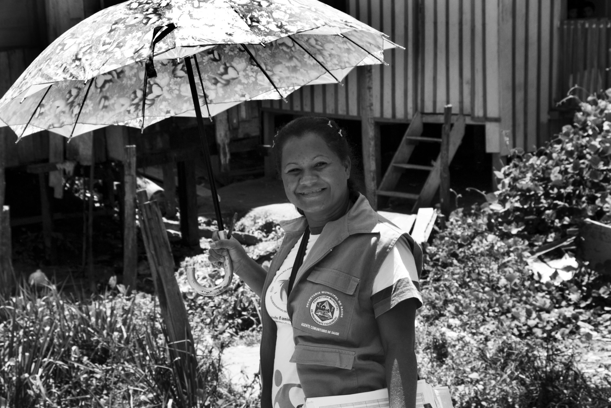
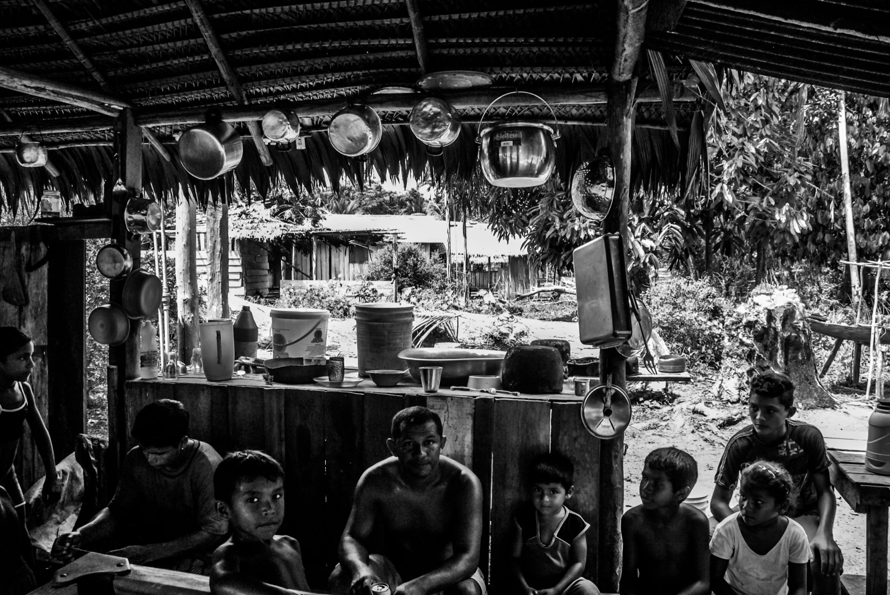

Eventos que precisam ser processados por uma comunidade inteira.
Enchentes, deslizamentos, acidentes e violência que atinge um território inteiro. Frente estratégica de resposta unificada com a equipe local.
Foto: Radilson Carlos Gomes, fotógrafo do SUS.

A gente organiza, e quem fica de pé é a equipe local.
- Organiza a resposta e coordena quem chega para ajudar, para que nada se perca.
- Treina a equipe local, que é quem vai estar ali no ano seguinte.
- Acompanha a equipe local em todas as fases: em atendimento, em estratégia, em encaminhamentos e em supervisão da execução do plano.
- Constrói com a gestão a política coletiva de resposta, em diálogo permanente.
- Deixa registro e dados de tudo que foi feito, com quem e por quê.
Foto: Radilson Carlos Gomes, fotógrafo do SUS.
Por que uma equipe de psicologia sistêmica é necessária nessas situações?
A equipe que chega e vai embora
Sem um plano de continuidade estruturado, a equipe local fica sem o histórico completo do que foi feito, sem direcionamento e sem clareza em um momento tão delicado.
O voluntariado sem estrutura
Muita gente se mobiliza para ajudar, mas sem estratégia e alinhamento como política pública, fica mais difícil para o município dar continuidade ao cuidado depois que a urgência sai do noticiário.
- Prevenção
- Preparação
- Resposta
- Recuperação
- Ressignificação
Como a gente chega
Uma equipe de psicologia social e sistêmica especializada para atuar ao lado de quem já está no chão, nunca por cima. Cuidado com quem foi atingido e com quem atende.
Um compromisso humanitário e sustentável ao longo do tempo.
Lei 12.608, de 10 de abril de 2012.
O melhor momento para essa conversa é agora.
Preencher o cadastroFoto: Radilson Carlos Gomes, fotógrafo do SUS.